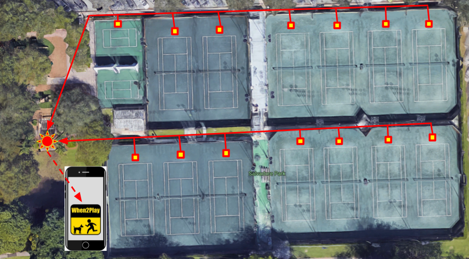

As shown above weather patterns that change every hour are very common in Florida
It could be 90 degrees and sunny in the morning and then there could be a torrential downpour and hour later.While you could check a weather app, that does not provide specific information regarding the temperature and the dryness of courts and playground equipment
Our Solution involves a network of very cheap, easy-to-install, and easily replaceable arduino computers that will be able to detect the wetness, temperature and humidity of courts, playgrounds and any other parks facilities.
